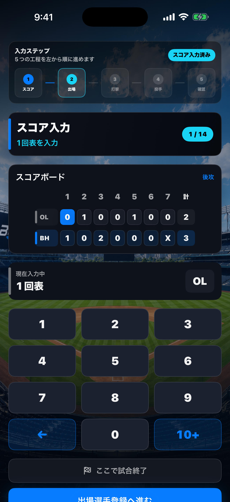
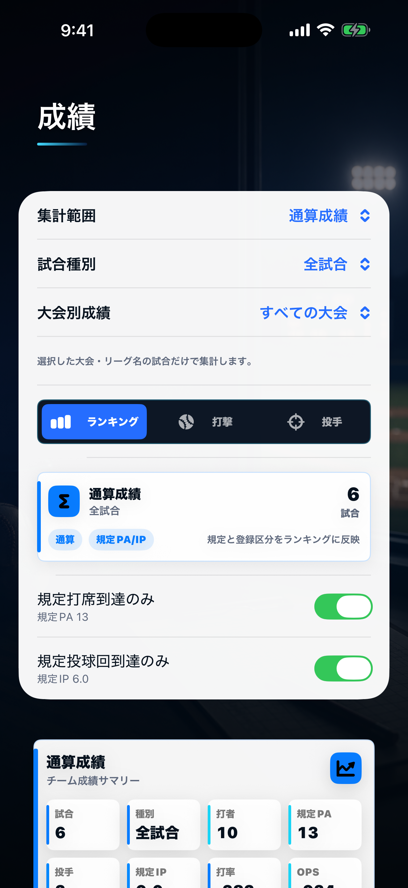
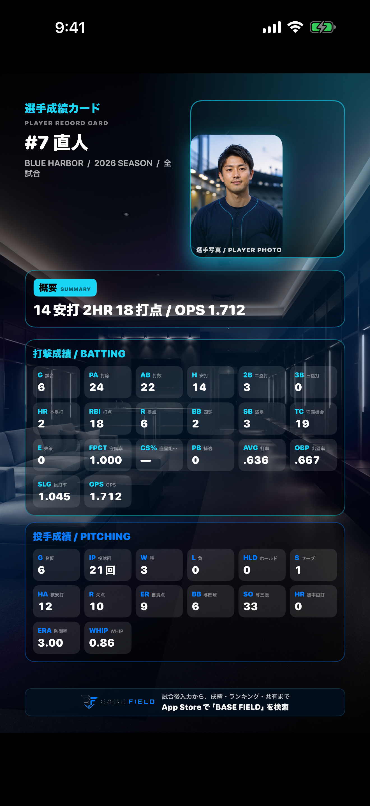

01 / INPUT
試合後、順番どおりに入力
スコア、出場選手、打順、守備、打者・投手成績を段階的に記録します。
草野球の試合後記録アプリ
試合後入力から、チーム成績・個人成績・ランキング・共有まで。草野球の記録を、チーム全員が見返せる形に。

REAL APP SCREENS
ここにある画面は、いずれも現行アプリの実キャプチャです。雰囲気だけの架空UIではなく、入力から成果までの実際の流れを示しています。
01 / INPUT
スコア、出場選手、打順、守備、打者・投手成績を段階的に記録します。
02 / STATS
打率・OPS・防御率・WHIPなどを、チームと選手の記録として見返せます。

03 / SHARE
選手カードや試合結果を画像にして、チーム内やSNSへ共有できます。

FIRST VALUE
初期シーズンを自動で準備し、最初の試合作成、保存後の結果確認・共有・ランキング・招待までを一つの流れにつなげます。
代表者情報とチーム名を登録し、最初のシーズンを準備します。
対戦相手と日付を入力し、スコアと成績の記録を始めます。
試合結果、Highlights、成績、ランキングの更新を確認します。
結果カードを共有し、App Storeリンク付き招待文でメンバーを呼べます。
FOR THE WHOLE TEAM
代表・監督・記録担当者
選手・チームメンバー
FREE & PRO
コアの試合入力は無料で使えます。Proは、より詳しく見たい人と、複数チームや出力を必要とする記録担当者向けです。
FREE
BASE FIELD Pro
Proの権利は購入したApple ID単位です。チーム参加だけで全員へ共有されるものではありません。
FAQ
BASE FIELDの中心は試合後のまとめ入力です。紙のスコアなどを見ながら、スコア・出場選手・打者・投手成績を記録します。
代表・管理者から届くチームコードまたはメンバーコードをアプリへ入力します。チームコードでは参加申請後に承認を受けます。
いいえ。通常のPro購入はApple ID単位で有効です。チームコードやメンバー承認だけで購入権利は共有されません。
Proでは記録のCSV出力と、現在のチーム名入りスコアシートのPDF・PNG保存を利用できます。
スコアシートのプレビューは無料です。
次の試合から、終わった後の楽しみも残しませんか。